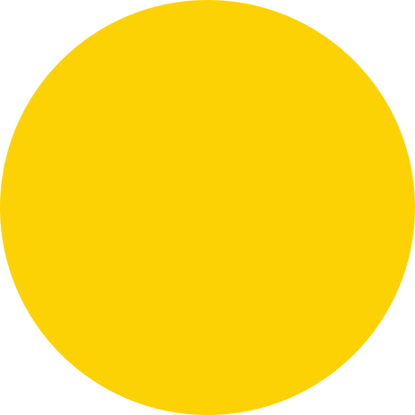
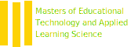

We’re Enlighten, a group of master students at Carnegie Mellon University, Human-Computer Interaction Institute. We come from various backgrounds from computer science, to architecture, and english. We designed and developed Product Name analytics dashboard for data coordinators who use RL products to support them for decision-making.
We are Enlighten


Greg Bunyea | Coordinator
Greg studied Computer Science and Art prior to METALS and worked for two years coordinating teaching assistants and developing content for a large-scale course. He is interested in seeing how academic research and user-centered methodologies come together in an educational product development life-cycle.
Jiasi Tan | Designer
Jiasi received a Masters of Architecture from Harvard University in 2014 and has worked as a designer in New York and Chicago from 2014 to 2018. She’s looking forward to designing an experience to support better educational decision making.
Canhai Chen | Developer
Canhai studied Software Engineering prior to METALS. He received his Bachelor’s degree from Nanjing University. He has worked as an independent developer and released several applications on the App Store. He is excited to explore how design, technology and learning sciences intersect in reality.
Yihong Shi | Researcher
Yihong studied heritage architecture and double majored in economics prior to METALS. She has worked as the co-founder and designer of an educational technology startup WUA tech for two years. She is excited to dig deep into users’ needs, feelings, and experiences to better support schools’ educational decisions.
Kexin Yang | Content Creator
Kexin received her Bachelor’s degree from Beijing Normal University in English Language Literature and has worked as a English teacher and instructional designer since 2016. She looks forward to mining rich educational data to generate insights.
METALS

The Masters in Education Technology and Applied Learning Science (METALS) is an 1-year professional Masters degree at Carnegie Mellon University’s Human-Computer Interaction Institute. The program is situated between design, computer science, and psychology drawing on areas of all three to inform better design, creation and evaluation of learning technologies. METALS graduates apply learning science principles, evidence-based research, and large-scale data analysis to design, create, and improve educational resources and technologies that enable students, instructors, and educational leaders to succeed.